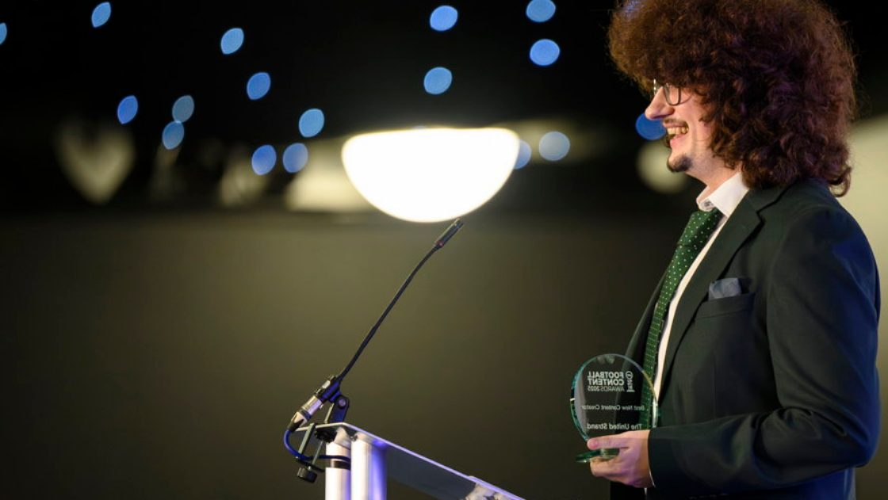
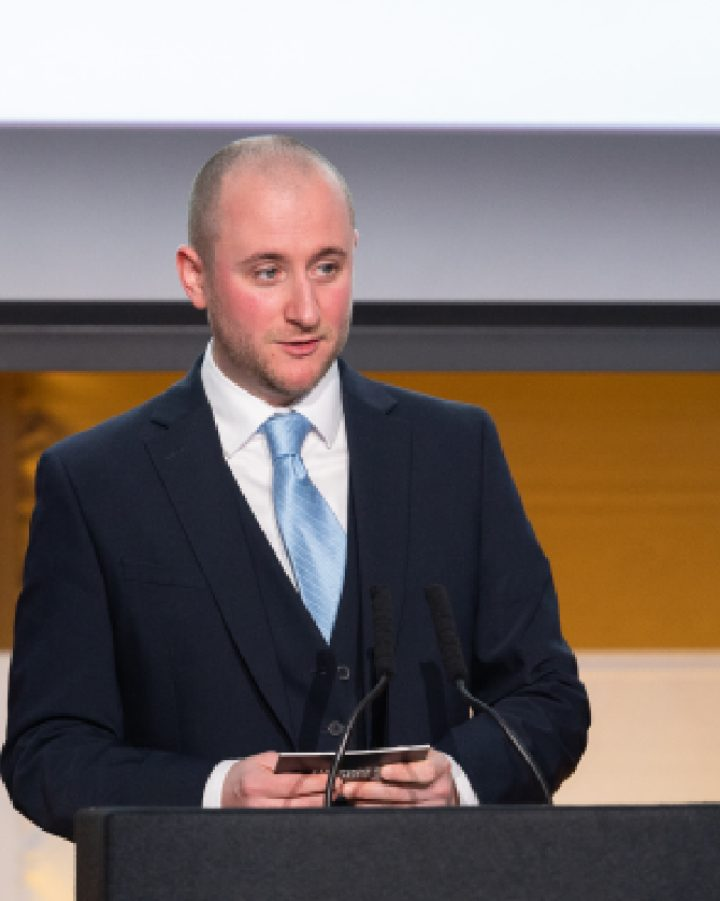

01
Social & content strategy
Channel audits, audience mapping and a platform-by-platform plan you can actually staff. We define what each channel is for, what good looks like, and how it gets measured.
AuditChannel strategyMeasurement
Social · Video · Content — built for sport
Sports Social Marketing is a specialist consultancy for football clubs, sports publishers, rights holders and brands. We set the strategy, design the formats, build the team — and turn attention into commercial value.
210M+ users reached 5B+ video views 15+ years 8 named references
Years leading social, video and content teams
Subscriber publisher advised on content strategy
User platform led on marketing & content
Annual reach for the awards platform we founded
Credibility
Premier League clubs, the biggest sports publisher on Facebook, a 2-billion-subscriber network and the awards platform football media turns up to.


Every logo above is a real engagement, with a named reference behind it.
Read the case studies Book an intro callGrowth in numbers
These aren't projections. They're the audiences, view counts and platforms our founder has led social, video and content for over fifteen years.
Across the Snack Media & GiveMeSport network, where we led social output for five years.
Total views on the SPORTbible video output we controlled at LADbible Group.
TheSoul Publishing's network, where we shaped content strategy and team workflow.
Multi-platform growth led across a thousand-plus channels and brand accounts.
FUTBIN, where we owned marketing and content strategy for Better Collective.
GiveMeSport was the biggest global sports publisher on the platform when we ran its social.
Want numbers like these on your own channels? Start with the audit.
Book a free 30-min audit callWhat we do
Take the lot as a full content operation, or take the one piece you're missing. Most clients start with an audit and a 90-day plan.
01
Channel audits, audience mapping and a platform-by-platform plan you can actually staff. We define what each channel is for, what good looks like, and how it gets measured.
02
Social-first series, shorts and matchday formats built for the platform they live on — with a production spec lean enough to run every week, not just for the launch trailer.
03
Org design, workflow, tooling and hiring. We've built creative, social, video and publishing teams from scratch and rebuilt ones that had outgrown their process.
04
Branded content that a sponsor renews. We build the inventory, the formats and the reporting that turn an audience into a rate card rights holders can defend.
05
We founded and ran one of football media's biggest awards platforms. We know how to build a campaign that grows entries, votes, partners and reach year on year.
06
Interim Head of Social or Content Director for launch phases, restructures and gaps between hires. Senior hands on the operation without a permanent headcount.
Not sure which one you need? That's what the first call is for.
Book a free 30-min audit call See it applied
We don't just advise on football media
The Football Content Awards started life as the Football Blogging Awards in 2012 and grew into the industry night for football creators, publishers and broadcasters. Over 500 guests a year, hosted at Old Trafford, the Etihad, Alexandra Palace and Anfield, with partners including Sky Sports, adidas, JD Sports, Budweiser and Football Manager.
More than a million votes were cast in a single year, and the platform now reaches tens of millions annually.
How we work
No 60-page deck that sits in a drive. Every engagement ends with something running — a format, a team, a process, a partnership.
Two to three weeks inside your channels, numbers and workflow. We benchmark against the competitor set, find where output and outcome have come apart, and hand back a prioritised plan with a 90-day sequence — not a wish list.
We put the operating system in: formats with a spec, a calendar with owners, a workflow with fewer hands on each asset, and the reporting that shows what's working. Where the team needs new roles, we write them and help you hire them.
Growth, then money. Once the engine runs, we push volume where it returns, open the channels you couldn't staff before, and package the audience into commercial inventory partners will pay for and renew.
The audit is fixed scope and fixed price. You see the thinking before you commit to anything else.
Talk through your briefTell us what isn't working on your channels and we'll tell you, on the call, whether it's a strategy problem, a format problem or an operating problem — and what we'd do about it.
Selected work
Fifteen years of briefs across clubs, publishers, platforms and rights holders. Here are six — the full set is on the work page.
Burnley FC / VSP Studios
Led the content operation through an ambitious launch phase — structure, direction and momentum on a complex brief, then handed over an operation ready for its next phase.
Hayters TV
Rebuilt the social video strategy and production process, launched channels the team had never been able to staff, and left the in-house social knowledge measurably stronger.
TheSoul Publishing
Brought strategic thinking to approach and process across one of the world's largest digital publishers — shaping plans, team workflows and structures that aligned divisions.
Football Content Awards
Founded, built and led an awards platform that became a fixture of the football media calendar — growing entries, votes, partners and reach every year.
FUTBIN / Better Collective
Owned marketing and content strategy for one of gaming's biggest football platforms — audience, editorial and channel strategy across a demanding, seasonal product cycle.
Snack Media & GiveMeSport
Took ownership of social output after the GiveMeSport acquisition, restructured the team and put in the structures that carried the growth of one of the UK's biggest sports publishers.
Nine full case studies — the brief, what we did, and what changed.
View all nine case studies Book an intro callCase studies across clubs, publishers and platforms
Named references from CEOs, MDs and founders
Production workload removed at Hayters TV
Teams built, scaled or restructured
References
Every quote below is from a CEO, MD, director or founder who brought us in — and put their name to it.
“Within 6 months we had doubled our social video performance, launched new channels that were previously unavailable for us, whilst cutting the workload needed to produce that content down by nearly half. Our internal knowledge on social is now unmistakably stronger.
“When Snack Media acquired GiveMeSport he was a natural choice to lead the social output. The changes he brought about to the social media team and the structures he put in place contributed hugely to our success. One of the most organised professionals I've had the pleasure to work with.
“Clear strategic thinking to approaches and process, helping shape plans and playing a key role in team workflows and structures to align teams across TheSoul. Practical solutions and insight that helped us prioritise and scale content more effectively.
“Joined during an ambitious and demanding launch phase at Burnley FC and played an important role in leading the team through a challenging period. I'd happily recommend him to any organisation looking for an experienced content leader who can bring structure, direction and momentum to a complex brief.
“We saw incredible growth across every area of the awards. If anyone needs someone for any content or social media projects, then I can highly recommend Anthony.
“Incredibly professional in his approach to building out our social media offering — quick and efficient identifying what needed to be done and the resources necessary to scale our team for growth. What he achieved in a short space of time was perfect for our needs.
We'll put you in touch with any of them before you sign anything.
Book an intro callStraight answers
Fair enough. Here's the honest answer to every objection we hear on a first call, before you have to ask it.
Good — most of our clients do, and we're not here to replace them. Nearly every engagement we take on is a team that's working hard and getting less back than it should. We fix the system around them: what gets made, why, by whom, and how it's measured.
At Hayters TV that meant the same team doubling video performance while doing about half the production work.
So don't. Start with a fixed-scope, fixed-price audit — two to three weeks, ending in a prioritised 90-day plan you own outright. If you take the plan and run it in-house, that's a perfectly good outcome and we'll say so.
No retainer, no minimum term, no long tail of change requests.
Fifteen years across football, Formula 1, boxing, tennis, golf, combat sports and esports — at club level, publisher level and platform level. We've run channels for a Premier League club and for the biggest global sports publisher on Facebook.
And the first two weeks of every engagement are spent in your numbers and your comments, not ours.
Usually by a strategy deck that nobody could action. We don't finish on a document — we finish with something running: a format with a production spec, a calendar with named owners, a workflow, a hire, a partnership.
Ask any of our eight named references what they were left holding at the end.
That's the point of the work. Growth is the first half; commercial inventory a sponsor will renew is the second. We build the formats, the rate card logic and the reporting that turns an audience into something a partner can plan a season around.
The audit lands in two to three weeks. The first format or process changes go live inside the first month. Meaningful movement on the numbers typically shows within a season — and you'll know from week three exactly what we think is causing the problem.
Still got one we haven't answered? Put it to us directly.
Book a free 30-min audit call Email a questionWho we work with
Club channels, matchday content and studio operations
Editorial, social and video at scale
Format development and audience growth
Content-led acquisition and retention
Sponsorship activation and branded content
Senior capacity on client briefs
Not on the list? If it has an audience and a content team, the problems rhyme.
Ask us
Award-winning social media and content leader. Founder of the Football Content Awards. Fifteen years across sport, media and entertainment.
About us
Sports Social Marketing was founded on a simple observation: most sports organisations don't have a content problem, they have an operating problem. The ideas are there. The system that turns them into consistent, commercial output usually isn't.
We've sat on both sides — in-house running publisher and club content teams, and on the outside as the consultancy brought in to fix, launch or scale one. That means we arrive knowing what an editorial calendar really costs to run, what a sponsor will actually renew, and which growth numbers a board should care about.
Insights
Short, practical writing on running a modern sports content team. Sample titles shown for this preview.
Volume stopped being the growth lever three algorithm changes ago. What to measure instead, and how to make the case internally.
Why one viral matchday clip loses more renewals than it wins, and how to build inventory a partner can plan a season around.
The structure we keep coming back to when rebuilding a content operation — and the two hires most organisations make too late.
Start here
Most projects start with a 30-minute call and a fixed-scope audit. If we're not the right people for the brief, we'll say so and point you at someone who is.